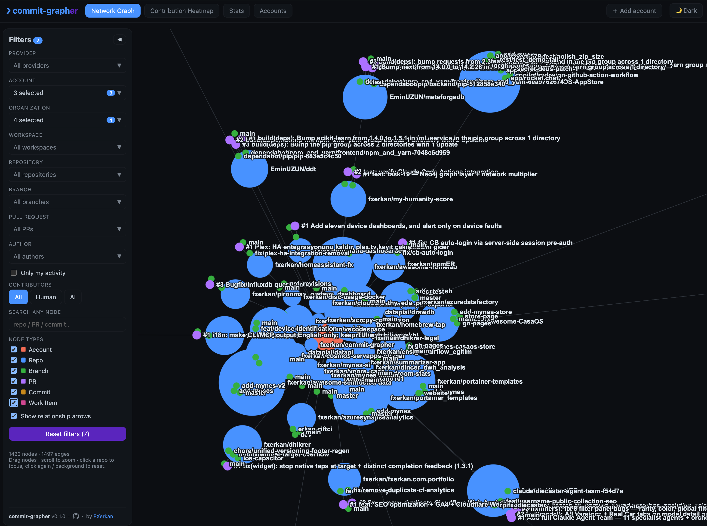
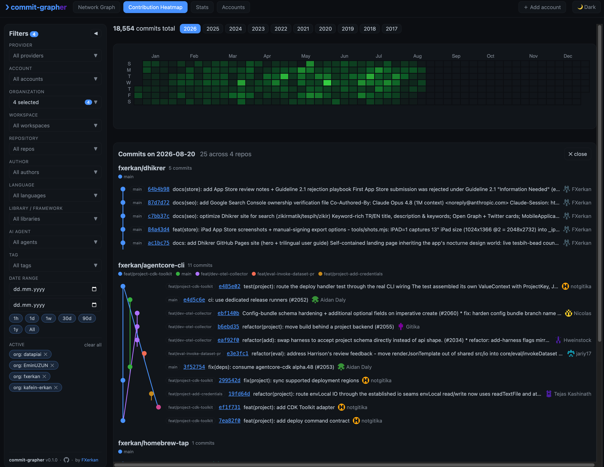
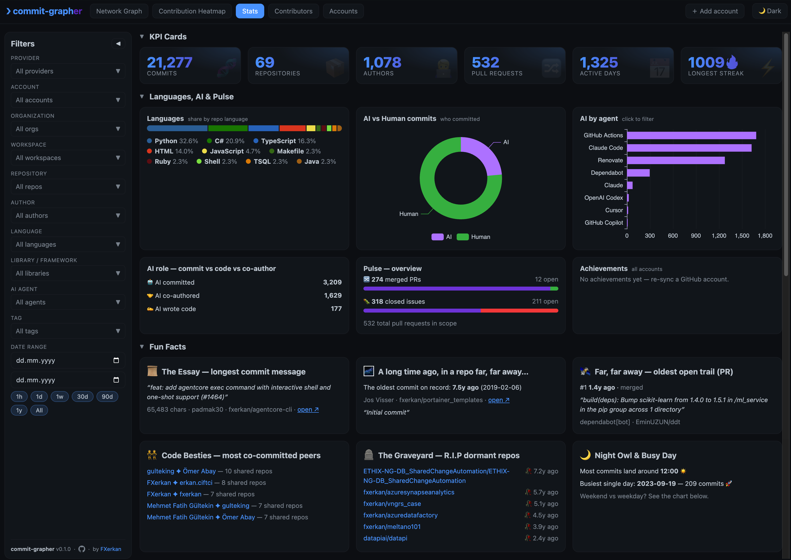
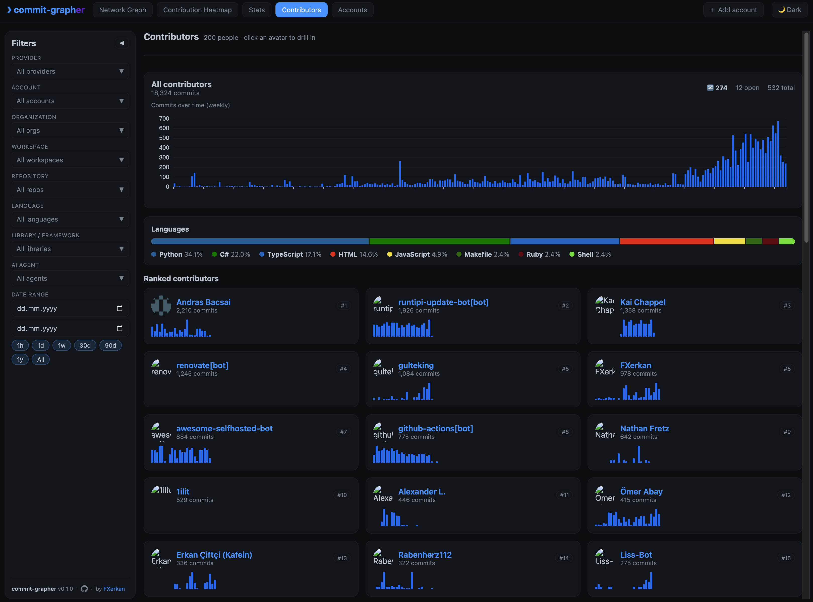
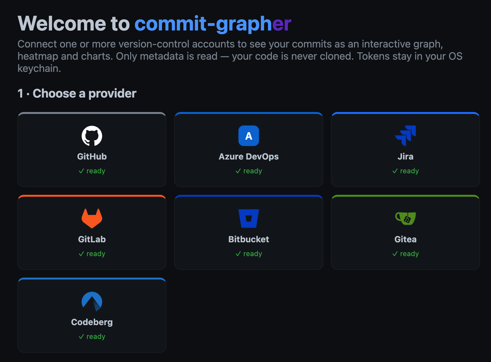

Sync once. Slice it every way. Everything cross-filters.
Obsidian-style WebGL graph of accounts → repos → branches → PRs → commits. Zoom, drag, focus, hover-to-highlight.
The GitHub calendar — combined across every provider. Click a day to drill into a real git-graph.
KPIs, night-owl hours, code besties, the repo graveyard, stars/forks/releases, tag cloud — all collapsible.
Everyone who's touched your repos, ranked — with a human-vs-AI breakdown.
Add via PAT or GitHub OAuth, rename accounts, export/import your whole dataset as JSON.
Tokens live in your OS keychain. Nothing leaves your machine except calls to the providers.
What each screen does, and how to drive it.
A physics-driven map of your entire git footprint. Node colours: account, repo, branch, PR, commit.





Three steps, then everything lights up.
Python ≥ 3.13 backend, Vite/React frontend. Local-first — nothing to deploy.
# backend
python -m venv .venv && source .venv/bin/activate
pip install -e backend
uvicorn app.main:app --app-dir backend --reload # http://localhost:8000
# frontend (dev, hot reload)
cd frontend && npm install && npm run dev # http://localhost:5173
# ...or build once and let the backend serve it:
cd frontend && npm run buildCommits, branches, PRs, tags, repo stats. It never clones a repo or reads file contents.
PATs live in your OS keychain via keyring — never on disk, never logged, never committed.
Runs on your machine and talks straight to the providers. No middleman, no telemetry.